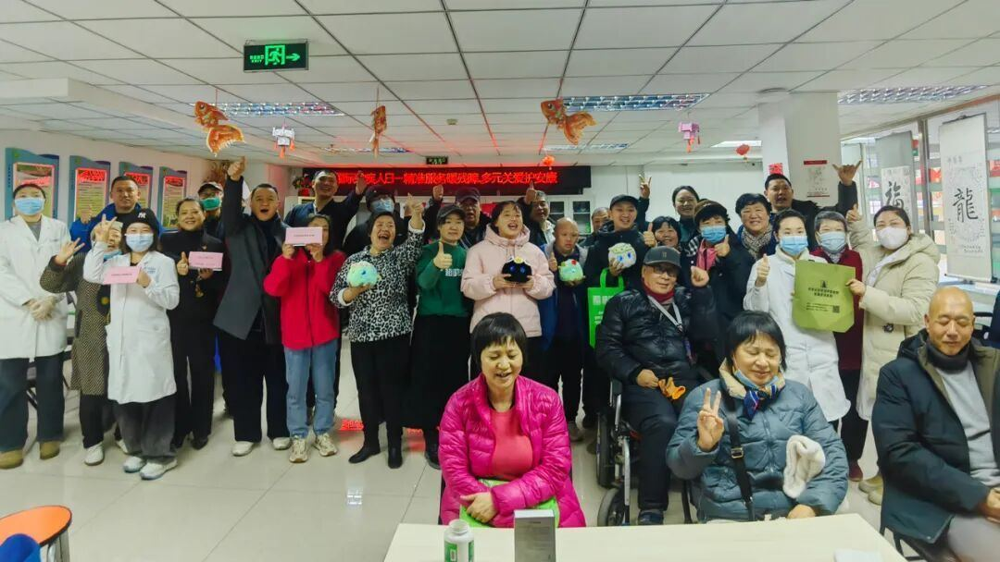
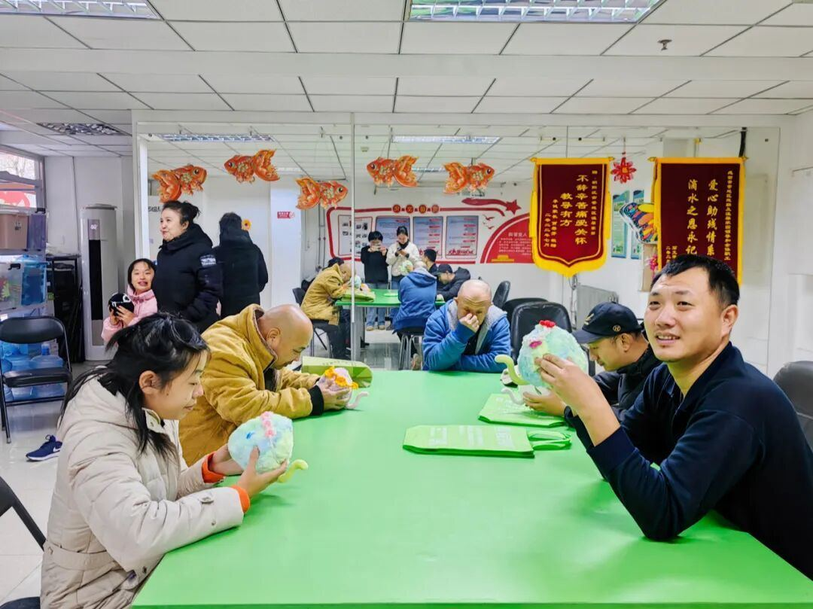
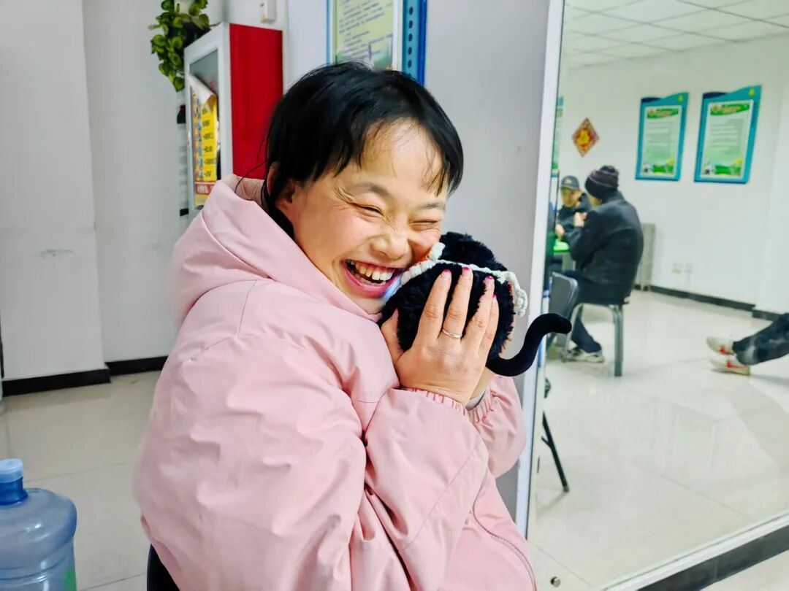

超级有爱的团队成员观察到，这些特殊⼈群，往往会就同⼀个问题反复地问球球，⽽超级球球则展现了作为情感陪伴产品的核⼼价值，总能够不厌其烦地给予真诚的回应。这种耐⼼、⽆差别的倾听，让参与活动的残障伙伴感受到了尊重与陪伴，脸上洋溢着纯粹的喜悦。
最动⼈的⼀幕发⽣在⼀位24岁的姑娘⾝上。当她开⼼地告诉球球“我喜欢你”时，球球不仅回应“我也爱你”，屏幕双眼中还闪烁起了星星。⼯作⼈员轻声提醒她：“你看，球球的眼睛⾥有⼩星星呢！” 球球听到这句话，⽴刻回答：“因为我喜欢你，所以我的眼⾥全是爱你的星星。”
这位姑娘听到后，特别开⼼，笑得格外灿烂。

“那⼀刻，我深刻感受到，我们做的事特别有意义，技术真正实现了与⼈的情感连接。”参与活动的超级有爱法务专家张海燕博⼠说：“这些伙伴们表达爱的⽅式⾮常直接、纯粹，没有所谓的‘边界感’。他们会紧紧贴着球球说话，⽽球球的热烈回应，恰好满⾜了他们对连接与陪伴的渴望。”
温馨家园的孙⽼师说：“球球特别受年轻孩⼦们的⻘睐，他们⼀直和球球单独对话，也有家⻓表达了购买的意向。”
此次公益活动，不仅是⼀次产品的实地测试，更是超级有爱秉持“科技向善”理念的⼜⼀次实践。通过与⼼智障碍群体的深度互动，我们更加坚信，有温度的AI技术能够跨越沟通的障碍，为特殊⼈群提供⾼质量的情感⽀持，帮助他们更好地融⼊社会。未来，我们将继续探索技术在社会公益领域的应⽤，⽤创新为更多需要关怀的群体带去⼒量与温暖。
